也紀念我們永遠的朋友 李士傑先生（Shih-Chieh Ilya Li）。
輕鬆學習 centos-7 基礎安裝升級與使用
作者簡介：顧武雄， Microsoft MVP、MCITP與MCTS認證專家、台灣微軟Technet、Tech Day、Webcast、MVA特約資深顧問講師。目前個人Linux著作有Linux企業現場應用系統、Linux私有雲社群網路現場實戰。
引言：Linux下的開源軟體千奇百種，其中能夠實踐在企業協同合作生產力的套件也相當多，只是面對這麼多開源的企業應用軟體，該如何來為它選擇一個最佳的免費Linux作業平台呢？當您這麼問時，相信許多專業Linux的IT工作者，都會一致強烈推薦您採用CentOS來作為您公司的IT營運基礎平台，因為它可以幫您扛起擔負從虛擬化到各類網路伺服器的使命。
簡 介
盡管在如今企業IT的運作環境之中，大多選擇以Microsoft為主的視窗作業系統，來做為各類伺服端與用戶端系統運行的基礎，但若是您深入去探索這一些企業的機房，您可能就會和筆者一樣，大吃一驚發現其實其中以Linux為主的伺服器、資訊設備還真不少呢！
究竟有一哪一些以Linux為主的伺服端系統或資訊設備，是企業IT的最愛呢？答案是DHCP Server、DNS Server、FTP Server、Web Server、Mail Server以及Spam Server，其中Mail Server、Spam Server與現今許多知名的網路儲存設備(NAS)、Thin Client等等，也都紛紛被許多廠商採用以Linux為基礎的作業系統，發展成自家品牌的網路產品，並且在IT市場上皆有亮眼的銷售成績。動手清點與檢視一下您公司的資訊設備，您可能也會發現當中有許多，其實它們共同的底層都是Linux Kernel。
想想看針對自建的Linux伺服器系統當中，哪一種Linux的發行版本是企業IT的首選呢？答案就是免費版的CentOS，如果是商用的版本則是Red Hat Enterprise Linux，別懷疑CentOS就是出自於Red Hat Enterprise Linux(RHEL)的開放原始碼所編譯而成，它的全名是Community Enterprise Operating System，顧名思義就是一套以網路社群經營起家的作業系統，且將目標的用戶群鎖定在企業IT。每當Red Hat Enterprise Linux有新的版本推出時，不久後的幾個月之內CentOS也會發行新的版本。如果說Ubuntu是如今最多Linux玩家的首選，那麼CentOS肯定也是全球企業IT最愛的免費作業系統。
接下來就讓我們一同來學習一下，目前最新的CentOS 7.0版本，如何讓初學者也能夠輕鬆的完成安裝升級、使用以及活用最新的Docker技術。
基礎安裝設定指引
首先請連結到以下官方網站，去下載CentOS 7.0的DVD ISO映像檔。完成下載之後，如果您打算將它安裝在實體主機之中，那麼就得使用燒錄軟體將它製作DVD光碟片，如果是要將它安裝在任一平台的虛擬機器之中，則可以直接使用此ISO映像檔掛載至VM的虛擬DVD設定中即可。另外無論是採用實體主機還是虛擬機器，可別忘了將DVD裝置設定為第一優先的開機媒體。
如圖1所示便是CentOS 7.0 DVD的啟動畫面，直接按下[Enter]鍵將直接進入作業系統的安裝設定。如果您想要確定一下此安裝光碟的燒錄是否有問題，則可以先選擇[Test this media & install CentOS 7]功能來進行測試。
最新CentOS作業系統官方下載網址：
https://www.centos.org/download/

▲圖1 CentOS 7安裝啟動選單
成功進入到CentOS 7.0的安裝設定頁面之後，如圖2所示在此必須挑選打算使用的介面語言，目前在中文(Chinese)的選項之中，以繁體中文來說，已有提供針對台灣與香港的版本。必須注意的是即便有中文介面可以使用，但並非所有的操作功能都已被翻譯成中文，有少部分的操作項顯示仍是以英文呈現。點選[繼續]。
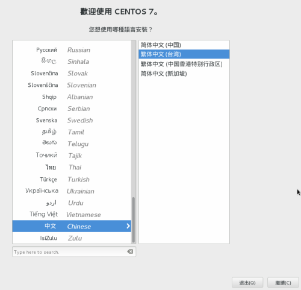
▲圖2 介面語言選擇
來到如圖3所示最重要的[安裝摘要]頁面，在這裡您可以根據實際的運作需要，來設定時區、語言支援、鍵盤配置、軟體選項、安裝目的地以及網路組態與主機名稱。
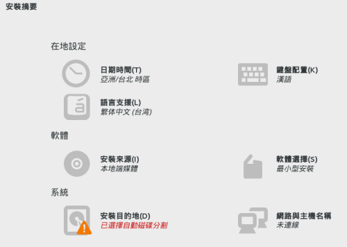
▲圖3 安裝摘要
如圖4所示便是鍵盤配置的設定頁面，您可以加入各種不同語系的鍵盤配置，然後將預設所要使用的配置設定移動至最頂端即可。如果想要查看一下實際鍵盤的配置範例，只要點選鍵盤的小圖示就可以看到模擬的圖像。
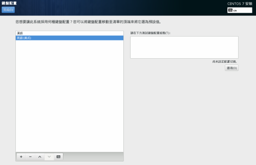
▲圖4 鍵盤配置
在如圖5所示的[安裝目的地]頁面中，預設將可以在裝置選擇之中看到所有已連接的本機硬碟機。在此只要有被勾選的磁碟，都將會被系統用來作為CentOS 7.0的磁碟分割區用途。至於如果您想要加入其它更多的網路磁碟機，例如：iSCSI、NFS等網路儲存區，只要點選[加入磁碟]即可設定連線組態。至於磁區的分割方式，入門的使用者可以選擇[自動配置分頁]即可，進階的玩家則可以選擇[我將配置分頁]，以便可以自訂每一個分割區所要掛載的目錄，對於有安裝多顆磁碟機的主機來說，還可以進一步配置軟體式的磁碟陣列(RAID)設定。
請注意！如果您希望存放於磁碟區中的資料，可以得到妥善的加密保護，可以一併勾選[加密我的資料]設定。
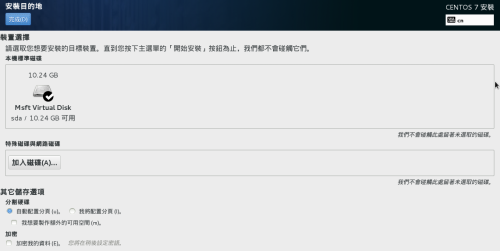
▲圖5 安裝目的地設定
如圖6所示便可以在[選取磁碟]的頁面之中，看到目前所有已選取的磁碟清單，從中可以檢視到每一顆磁碟的容量、剩餘空間、型號、名稱以及是否用來作為開機用途。
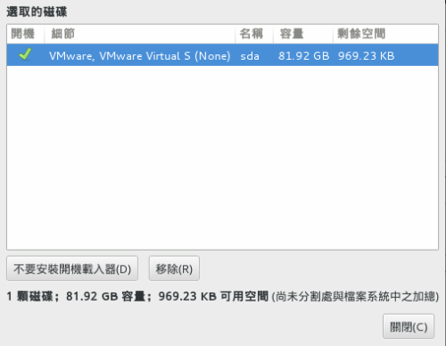
▲圖6 選取的磁碟
在如圖7所示的[網路與主機名稱]頁面中，一旦開啟網路卡連線便可以取得目前區域網路中，由DHCP服務所發予的動態IP位址。左下方則可以自訂主機名稱，此名稱尾碼的輸入最好能夠與目前內部的DNS網域名稱相同，並且也必須在DNS服務中添加一筆此主機的A記錄。若是此主機打算用來作為伺服器系統用途(例如：FTP Server)，則務必改用靜態IP位址設定，請點選位在右下方的[設定]按鈕繼續。
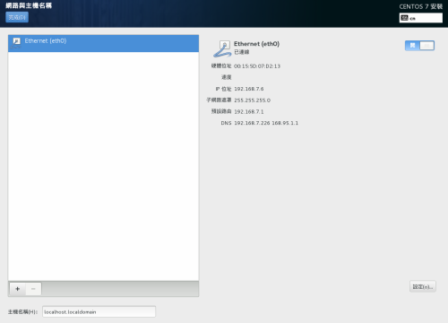
▲圖7 網路與主機名稱設定
在如圖8所示的[編輯eth0]頁面中，請先切換到[IPv4設定]頁面中，來手動輸入要給予此主機使用的內部IP位址，以及網路遮罩、通訊閘道位址、DNS伺服器位址。必要時可能還得點選[路由]按鈕，來完成進階的網路路由配置。此外如果您想要自訂此網路連線的名稱，在此也是可以進行修改的。而當有安裝多張網路卡時，還可以排列它們的先後順序，這將有助於應用在叢集規劃與負載平衡的架構之中。
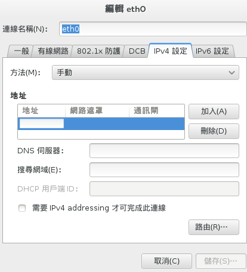
▲圖8 IPv4設定
在完成了IPv4的固定位址設定之後，請切換到如圖9所示的[一般]頁面中，來將其中的[當這個網路可用時自動連線]設定勾選，否則在完成系統安裝與啟動之後，將必須手動啟動此網路的連線。另外值得注意的是，在未來如果此主機有連線VPN網路的需要，則可以再次回到此網路的連線設定，然後將自動連線至VPN的設定勾選，並且選取已經建立好的VPN網路，如此一來就不需要再每一次登入之後，才進行VPN網路的手動連線了。
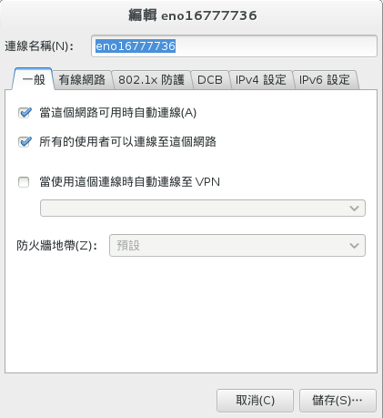
▲圖9 網路卡一般設定
在如圖10所示的[軟體選擇]頁面中，對於進階的Linux專業工作者而言，只要選擇[最小安裝]即可，等到往後確認所需要的套件之後，再來陸續透過命令提示列，以手動方式完成各項套件的下載與安裝。而針對Linux的初學者來說，入門的學習為了避免遭遇太多的困難，最好能夠選擇[GNOME桌面環境]的安裝類型，並且建議您將其中的所有附加元件全部選取，如此一來不僅後續可以省去許多使用上的麻煩，其中所內建的許多生產力工具，將可以協助您解決許多操作管理上的問題。點選[完成]繼續。
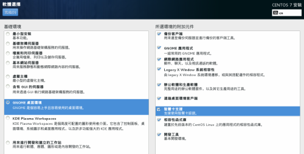
▲圖10 軟體選擇
完成[安裝摘要]設定之後，在這個版本中為了提升安裝的效率，如圖11所示系統將會在背景開始進行各項套件的安裝，在這個階段中您可以進行預設管理員Root的密碼設定，以及建立一個一般使用者帳戶。
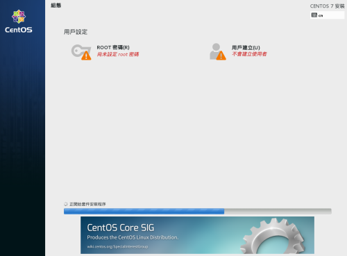
▲圖11 用戶組態設定
在如圖12所示的[ROOT密碼]頁面中，請輸入兩次的密碼設定。此密碼的輸入除了最好能夠大於七位數以上，其內容如果能夠包含數字、大小寫字母以及特殊符號在內的話，肯定可以大幅降低密碼遭字典攻擊破解的機率。點選[完成]繼續。
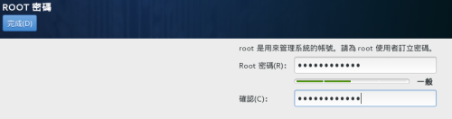
▲圖12 Root密碼設定
在如圖13所示的[建立使用者]頁面中，請輸入一般使用者帳戶的各項欄位資訊，這包括了全名、使用者名稱以及密碼。其中使用者名稱為登入時的識別欄位，因此和密碼欄位一樣會有大小寫的區分必須特別留意。此外由於此使用者為第一位的一般帳戶，因此建議您將其中的[讓這位使用者成為管理員]設定勾選，以利於往後可以使用此帳戶的操作，來隨時使用像是su與sudo等命令，來完成所需要的管理員作業。點選[進階]按鈕繼續。
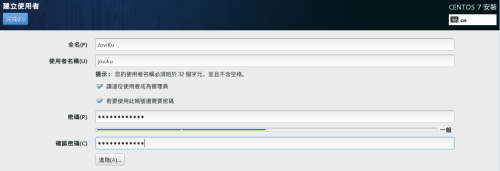
▲圖13 建立使用者
在如圖14所示的[進階用戶組態]頁面中，我們可以自訂使用的家目錄、使用者ID、群組ID以及所要加入的現行群組，若是所輸入的群組不存在，系統將會自動幫我們建立。點選[儲存變更]。
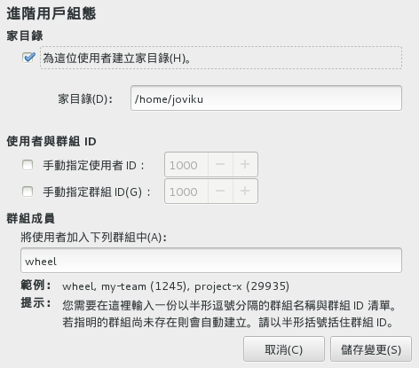
▲圖14 進階用戶組態
成功完成所有安裝與設定之後，將需要重新啟動電腦。如圖15所示便是它的啟動選單，其中第一個選項為主要正常的啟動模式，而第二個選項則是屬於修復模式的啟動，主要使用在當CentOS系統無法正常啟動時的修復操作。另外如果您在此按下e鍵，則可以編輯已選取的項目，按下c鍵則可以開啟命令提示列。
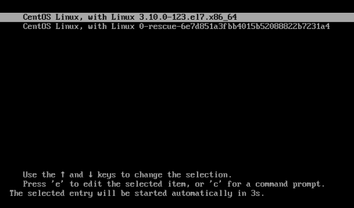
▲圖15 CentOS 7啟動選單
首次完成安裝的啟動將會先進入到有關授權資訊以及Kdump的設定頁面，其中Kdump主要使用在Linux核心當機發生時，進行系統記錄檔的頃印功能，以協助找出可能造成當機的原因，因此需要特別設定保留給Kdump專屬的記憶體空間(預設=128MB)。當然啦！您也可以選擇不要啟用此功能，直接完成這初始設定。如圖16所示便是CentOS 7.0的登入頁面，您可以在尚未登入之前，在畫面右上方進行語言的切換、聲音大小的調整以及關機等操作。
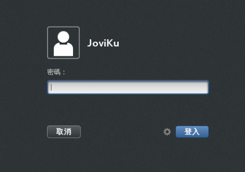
▲圖16 使用者登入
對第一次的登入還會出現如圖17所示的[歡迎使用]頁面，在此首先必設定想要使用的語言，盡管這部分的設定在前面的安裝過程中也已經選取過，但是在未來我們仍可以從[系統工具]的[設定值]中來進行變更。點選[下一步]繼續。
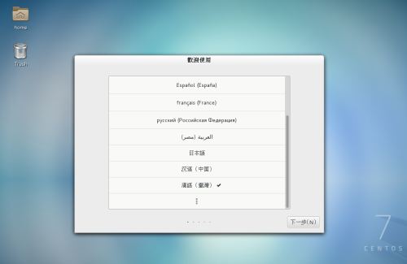
▲圖17 初次登入CentOS 7
接著在如圖18所示的[輸入來源]頁面中，可以選擇鍵盤輸入的配置方式，您可以對於這一些在安裝時所加入的鍵盤配置來列使用順序。點選[下一步]繼續。

▲圖18 編輯輸入來源
在如圖19所示的[線上帳號]頁面中，可以讓您加入各種知名的社群帳戶與郵件帳戶的連線資訊，以作為未來有關於相片、聯絡人、郵件等等的統合管理與應用。點選[加入帳號]繼續。
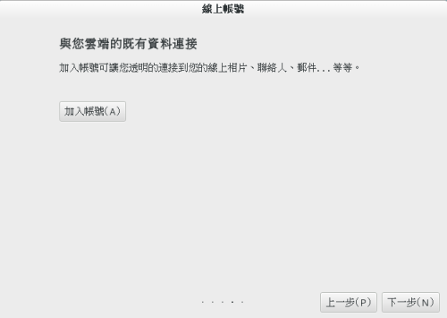
▲圖19 線上帳號設定
在如圖20所示的[加入帳號]頁面中，請選擇目前您有在使用的帳號類型，這包括了Google、ownCloud、Facebook、Windows Live、Microsoft Exchange、IMAP與SMTP、企業版登入。這一些帳號的連線設定，後續同樣可以在[系統工具][設定值]中來進行管理。
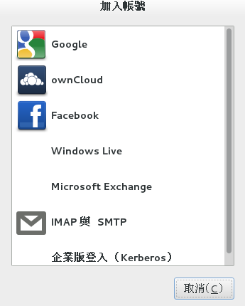
▲圖20 加入帳號
如圖21所示便是Facebook帳號與密碼的連線設定，建議您將其中的[維持GNOME的登入狀態]設定勾選。成功通過密碼驗證之後，Facebook網站將會再次跟您確認相關授權訊息。
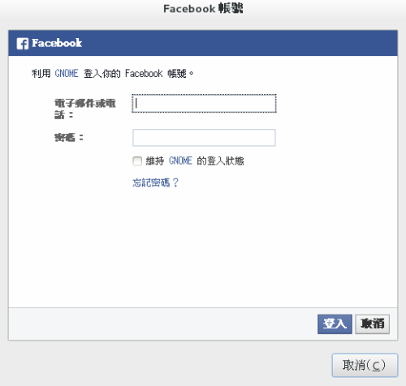
▲圖21 加入Facebook帳號
為了確保真實身份的安全問題，Facebook網站也將會再發送一封如圖22所示的確認函給您。其中內容便會出現有關GNOME應用程式的登入警告。只要確定此應用程式是您授權的合法連線，那麼這類的Email通知便可以通通忽略掉。
▲圖22 Facebook登入警告
回到上一步驟中時點選[下一步]，便會出現如圖23所示的完成訊息頁面。您可以繼續點選[Start using CentOS Linux]按鈕，來查看有關於針對CentOS 7.0入門資訊，這當中包括了許多常用工作的操作指引。
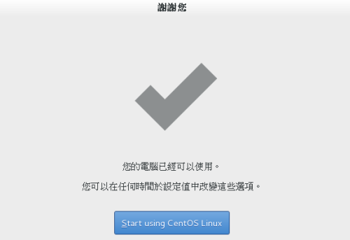
▲圖23 完成初始設定
接下來讓我們來熟悉一下CentOS 7.0的GNOME視窗介面。首先是如圖24所示最常使用的[應用程式]功能表，這裡頭已經幫我們預先分類好了各個內建軟體套件，包括了公用程式、影音、系統工具、網際網路、美工繪圖、辦公、附屬應用、雜項。以LiberOffice系列文書編輯軟體來說，就是被分類在[辦公]類的選單之中。至於有關瀏覽器或Email的收發軟體，則會被分類在[網際網路]的選單之中。
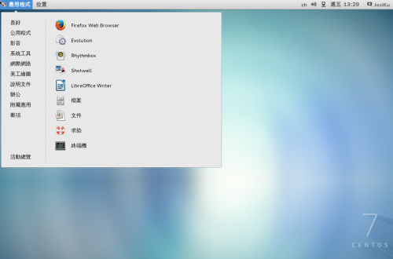
▲圖24 應用程式選單
當您開啟的應用程式越來越多時，無論是想要關閉某一些執行中的程式視窗，還是想要切換至某一個應用程式的操作介面，都只要點選位在[應用程式]功能選單中的[活動總覽]，然後再點選工具列中的最下方小圖示，這時候就會出現類似如圖25所示的畫面，這裡的操作設計有點類似於平板電腦的App管理功能，您可以關閉任何一個預覽中的應用程式，或是點選進入想要切換的應用程式。當開啟的應用程式數量很多時，還可以透過關鍵字的搜尋來找到目前開啟中的應用程式。另外您可以在一開啟這個介面的同時，檢視到最近經常開啟的應用程式清單，來做為快速開啟常用程式介面的選擇之一。
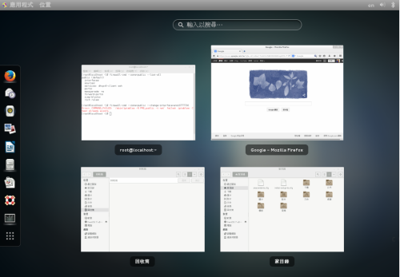
▲圖25 活動總覽
如同一般使用者最常使用的Windows作業系統一樣，我們可以對於許多常用的檔案類型，例如網頁、電子郵件、音樂檔、影片檔以及相片檔等等，預先配置好喜好的應用程式，如此可以避免掉許多操作上的不便。關於此設定您可以從[應用程式]下拉選單中的[設定值][詳細資料]介面，如圖26所示來配置好[預設應用程式]中的各項對應設定。
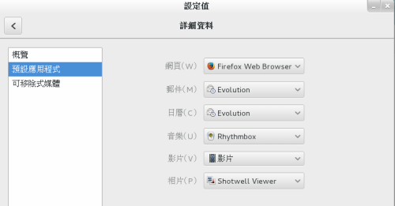
▲圖26 預設應用程式設定
在如圖27所示的[系統工具]清單之中，可以方便IT人員進行初始啟動的程式設定、系統運作的監控、系統記錄的查看、開啟設定值組態配置、軟體套件管理以及軟體更新。若對照Microsoft Windows Server 2012 R2，其中的系統監控與初始啟動程式就像是[工作管理員]的功能，設定值就像是[控制台]，軟體就像是[程式和功能]，軟體更新就像是[Windows Update]。
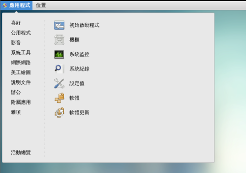
▲圖27 系統工具
如圖28所示的[軟體更新]功能，便是在完成CentOS 7.0初步安裝後的首要工作。透過此功能的執行，可以將系統中目前所有已安裝的套件，修正其可能的錯誤問題(BUG)、解除安全性漏洞以及提供更多的新功能。不過在某一些特殊的情況之下，您可能會需要將特定的軟體套件項目之勾選取消，以避免可能的相依套件程式無法正常運行之問題。點選[安裝更新]按鈕將會開始進行指定更新套件的下載與安裝。
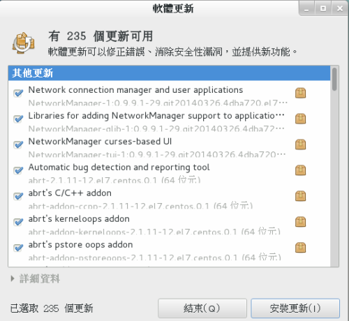
▲圖28 軟體更新
在更新套件的下載與安裝過程之中，可能會出現類似如圖29所示的警示訊息，此動作只是為了讓您確認來源簽章的安全與合法性，點選[Y]即表示信任此軟體簽章並完成更新。
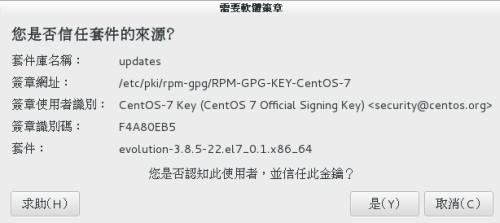
▲圖29 簽章金鑰確認
針對某一些與系統運作檔案有關的程式更新，通常在完成更新之後都會出現如圖30所示的提示訊息，請點選[重新啟動電腦]，如此才能夠讓這一些程式的更新與執行生效。
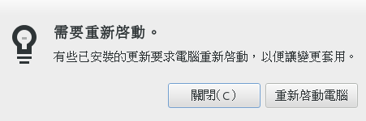
▲圖30 完成軟體更新
今無論是哪一種的作業系統都需要有自動鎖住螢幕的功能，而CentOS 7.0的鎖住螢幕之設計，做得有點像是智慧型手機與平板的樣式，您只要按住滑鼠左鍵並向上滑動即可輸入帳密與解鎖。
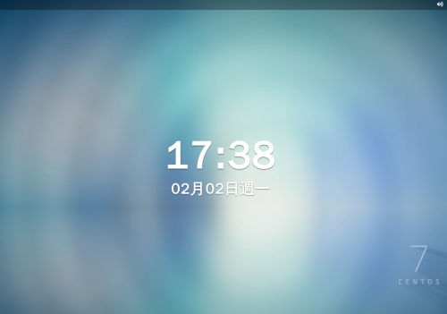
▲圖31 鎖定畫面
請注意！若是您將CentOS部署在正式營運的網路環境之中，為了確保遠端存取的安全問題，建議您修改/etc/ssh/sshd_config設定檔，並將其中的PermitRootLogin敘述設定為No以及把前置的#號去除，更進一步的做法則是把預設的埠口22，也改成尚未使用的其它埠口編號。儲存完成之後，最後請下達systemctl restart sshd.service命令，來重新啟動SSH服務。
新一代防火牆管理工具
在CentOS 7防火牆的預設管理當中，已不再使用iptables套件了, 而是改用firewalld套件，由於改以採用區域(zone)政策的配置方式，因此將使得防火牆規則的新增、刪除以及修改的套用，變得更加有效率，不再容易發生因規則設定的變動，導致現行工作階段遭到中斷的問題。在管理部分它分別提供了以firewall-cmd命令為主的管理工具，以及圖形介面的firewall-config管理工具。如圖32所示您可以透過systemctl status firewalld.service的命令，來查看目前防火牆服務的運行狀態。
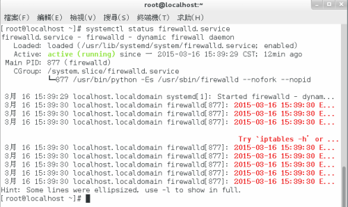
▲圖32 查看防火牆狀態
如果想要查看某一個區域的設定內容，就可以像如圖33所示一樣，下達firewall-cmd –zone=public –list-all命令參數，其中public便是系統預設的外部公開區域名稱。從這裡可以知道目前已開放連入的服務是dhcpv6 clinet以及ssh。如果您想要在此區域移除某個服務，可以輸入像是firewall-cmd –zone=public –remove-service ssh命令，便是將目前開放的ssh服務移除。至於增加呢？當然只要將其中的–remove-service修改成–add-service即可。
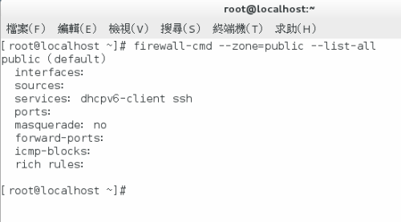
▲圖33 檢視預設區域設定
覺得使用命令工具來管理防火牆設定太麻煩了嗎？沒關係您只要執行firewall-config命令，即可開啟firewalld套件專屬的圖形管理介面。如圖34所示，在此您可以先看到系統預設的幾個區域(界域)，您可以為每一個區域配置各自的服務、連接埠、連接埠轉送以及ICMP過濾器等規則，這種做法相當適用在連接多網卡的網路安全控管上，因為您可以將不同網路卡的連線，套用在不同的區域政策，並且可以隨時進行替換。
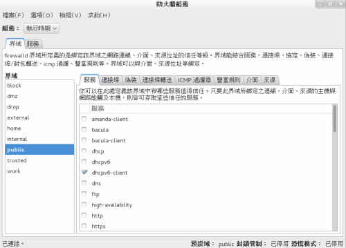
▲圖34 圖形管理介面
想要替目前的任何一張網路卡連線，套用不同的區域政策，只要在如圖35所示的[選項]頁面中，從[變更連線的界域]中來挑選與修改即可。至於預設套用的public界域，如果您想要改由其它界域來代替，只要點選[變更預設界域]來變更即可。最後還有一項重要的功能，那就是[恐慌模式]的執行，此功能適用在當內部網路發生嚴重的病毒傳播時，一旦執行便會禁止所有在此主機中的連入與連出流量。
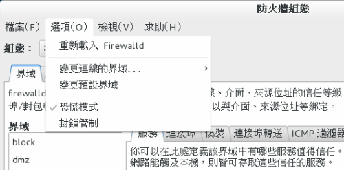
▲圖35 選項功能表
將CentOS 6.5就地升級成CentOS 7.0
許多的Linux系列的作業系統，就像Microsoft Windows系統一樣，都是可以進行就地升級(In-Place Upgrade)作業，而CentOS也是不例外的。不過必須注意的是並非所有的升級作業都能夠成功，尤其是對已經有安裝使用KDE或GNOME桌面環境的系統。為了避免CentOS 6.5升級至CentOS 7.0的過程中發生問題，導致升級後的系統無法正常運作，因此務必在執行升級作業之前先完成以下兩件工作：
- 完整備份整個CentOS系統與資料
- 執行升級前的檢查作業
在以root管理員帳戶登入之後，請在命令提示列下切換到/etc/yum.repos.d/ 路徑下，然後如圖36所示以vi或vim文字編輯器來建立一個全新的設定檔，您可以把它命名為upgradetool.repo，以作為後續下載安裝升級前必要套件的參考設定。完整設定內容請參閱如下：
[upg]
name=CentOS-$releasever - Upgrade Tool
baseurl=https://dev.centos.org/centos/6/upg/x86_64/
gpgcheck=1
enabled=1
gpgkey=file:///etc/pki/rpm-gpg/RPM-GPG-KEY-CentOS-6
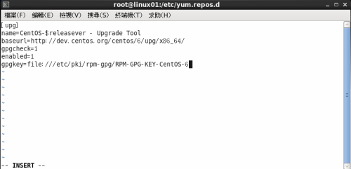
▲圖36 建立升級工具設定檔
再來是如圖37所示下達以下命令參數，來下載進行系統升級作業前所需要的套件。
yum install redhat-upgrade-tool preupgrade-assistant-contents

▲圖37 安裝升級所需套件
接下來您便可以執行如圖38所示的preupg -l 指令，來產生升級前的HTML報告。此報告的內容有助於您找出潛在的問題與不相容之處。
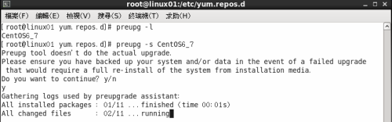
▲圖38 產生升級前的檢查報告
如圖39所示您可以從/root/preupgrade/路徑下，找到完整的報告資訊檔案。請點選開啟result.html檔案即可查看完整內容。
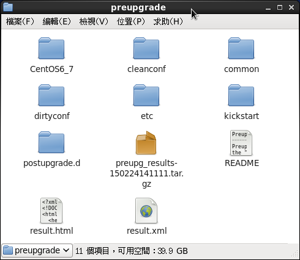
▲圖39 升級報告資料
在完成了升級前的報告檢視之後，如果評估結果確定要進行就地升級，請如圖40所示先下達rpm –import https://mirror.centos.org/centos/RPM-GPG-KEY-CentOS-7命令參數來匯入RPM 金鑰，然後再執行centos-upgrade-tool-cli –network 7 –instrepo=https://mirror.centos.org/centos/7/os/x86_64/命令參數，來開始進行系統升級。如果執行後出現了Continuing with this upgrade is not recommended這行訊息，即表示在您現行的CentOS 6.5系統之中，肯定有一些不相容於升級作業的已安裝套件，若是您仍執意要強行升級，則只要在此命令參數的最後面加入-force參數即可，不過請先確定您您已經預先做好了完整備份工作。
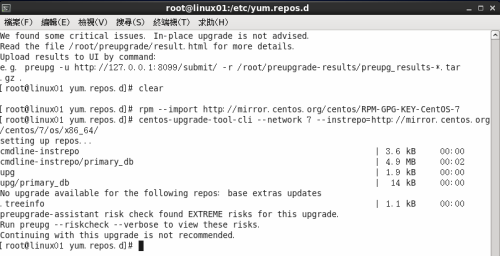
▲圖40 無法升級提示
完成CentOS 7.0的升級之後，其Linux Kernel也已從2.6升級到了3.10.0，您可以透過下達cat /etc/redhat-release來查看目前的CentOS版本資訊，若要查看Linux Kernel版本資訊，則可以改下達uname –a命令即可。
請注意！當您在舊版的CentOS 6.5之中有安裝與使用Gnome或KDE桌面，則發生升級失敗的機率是相當大的，一旦失敗將會導致您所正常進入到X Window的桌面環境之中，也就是僅會看到滑鼠游標，而整個桌面將是呈現一片黑。
架設最新FTP Server
CentOS的版本從過去到現在，最常被用來架設的Server類型，分別是Mail Server、Web Server以及FTP，其中FTP服務的使用至今在各行各業仍是歷久不衰，而且甚至於使用量還有逐年增加的趨勢，我想這和目前的智慧型手機App也有支援它的因素，讓許多行動工作者仍可以很方便的，透過它的連線來快速取得或供給所需要的檔案資料。
在CentOS 7.0對於各種軟體套件的管理，除了可以使用傳統命令工具的做法，如果您想要操作上更簡單一點，不妨試試位在[應用程式][系統工具]功能選單中的[軟體]功能，如圖41所示便是它的管理介面，在此您可以從[Servers][FTP伺服器]的分類節點下，找到有關於在CentOS下非常好用的一套FTP伺服器套件，那就是[Very Secure Ftp Daemon]。在將此服務套件完成安裝之後，後續您同樣可以在此介面中將它移除，或是查看與它相關的檔案清單、相依的套件資訊以及開啟它的專案網站等等。
請注意！您可以透過在命令提示列中下達yum install -y vsftpd，來完成[Very Secure Ftp Daemon]服務套件的安裝。
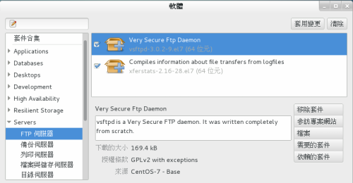
▲圖41 安裝FTP伺服器套件
完成VSFTP服務套件的安裝之後先不用急著啟動它，請先以vi或vim的文字編輯器，來開啟如圖42所示的/etc/vsftpd/vsftpd.conf設定檔，然後找到anonymous_enable敘述並將其設定值修改為No，以避免匿名的使用者登入此VSFTP服務。儲存後離開。
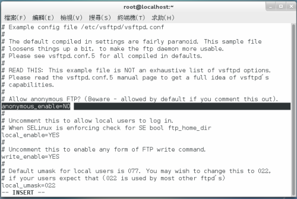
▲圖42 修改vsftpd.conf設定
如圖43所示接著就可以下達systemctl start vsftpd.service來啟動VSFTP的服務，如果已經啟動過則可以改下達systemctl restart vsftpd.service。至於是否有啟動成功請下達systemctl status vsftpd.service來查看。
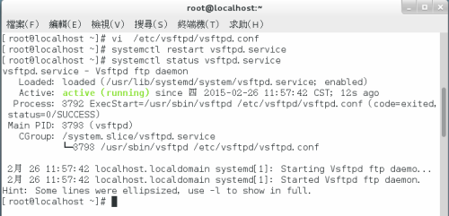
▲圖43 重新啟動vsftp服務
如果您希望VSFTP服務能夠在每一次CentOS系統啟動時自動啟動，那麼您還得下達systemctl enable vsftpd.service，來讓它在每一次開機時自動啟動。
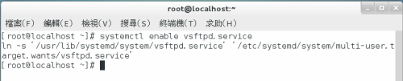
▲圖44 設定vsftp服務啟動
完成VSFTP的安裝與啟動設定之後，如果您有啟動本機的防火牆功能，則還必須下達以下兩個防火牆設定命令，以便讓網路中其它電腦的FTP Client可以連線登入：
firewall-cmd --permanent --add-port=21/tcp
firewall-cmd --permanent --add-service=ftp
成功加入了兩個防火牆規則的開放設定之後，請下達firewall-cmd –reload來重新載入最新設定，便可以立即生效使用。
接下來我們就可以像如圖45一樣，直接在本機系統中，以FTP Client的命令來嘗試連線VSFTP服務，執行後可能會出現”找不到指令”的錯誤訊息。這時候您只要下達yum install –y ftp，即可完成此基本FTP Client套件的安裝。
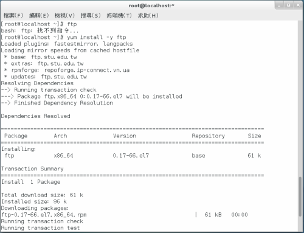
▲圖45 安裝FTP Client套件
成功安裝FTP Client套件之後，就可以再一次嘗試下達ftp命令來連線VSFTP服務。在以合法的使用者帳密成功登入之後，預設便會進入到該使用者的家用目錄(HOME)之中。接著如果您想要下載單一檔案，可以使用get命令。若是多檔案的下載則可以mget命令。針對檔案的上傳則是使用put命令。結束此FTP Client工具的連線，請下達bye即可。
請注意！若是您想要結合腳本檔的方式，來幫您自動化處理一串的連線操作程序，則可以選擇下載安裝lftp套件。
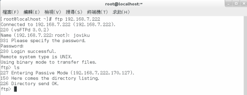
▲圖46 連線FTP服務
無論是ftp還是lftp套件皆是屬於命令工具的FTP Client，這對於已經習慣視窗操作模式的使用者來說還挺不方便的，這時候您就可以善用CentOS內建提供的gftp圖形介面的FTP工具，不過此工具終究無法像目前最多人使用的Filezilla免費工具來得方便，因為它不僅功能面豐富且提供了橫跨各種平台的版本，讓使用者的操作習慣可以一致性。在CentOS 7.0之中您只要下達yum install filezilla命令即可完成下載與安裝，過程之中萬一出現相依套件的問題，只要依據提示訊息來下載安裝所缺少的幾個必要套件即可解決。如圖47所示則是Filezilla的用戶端與伺服器軟體下載的官方網址，您也可以在此點選下載所需要的Filezilla Client平台版本，至於伺服器的版本目前僅提供Windows平台下的軟體。
請注意！在以Debian或Ubuntu的為主的Linux作業系統，如果也想要安裝FileZilla套件，只要下達sudo apt-get install filezilla命令即可。
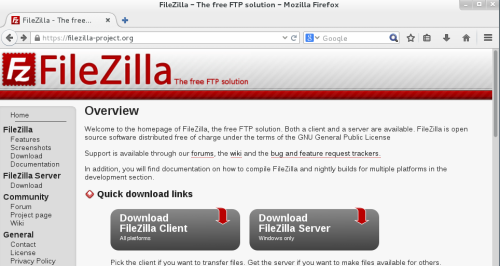
▲圖47 FileZilla套件下載
如圖48所示便是Filezilla在CentOS 7.0平台上執行後的操作介面，您只要在上方列輸入所要連線的FTP伺服器位址、帳號以及密碼，然後點選[快速連線]按鈕即可。至於[連接埠]如果該FTP伺服器是採用服務預設的埠口，便可以不需要輸入。成功登入之後，左方窗格為本機電腦右方則是遠端的FTP伺服器，雙方之間的檔案傳輸，全都只要透過按住滑鼠左鍵拖曳目標檔案或資料夾的方式來完成即可。
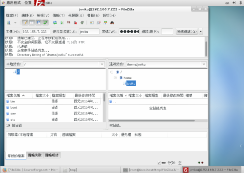
▲圖48 以FileZilla連線FTP服務
Docker套件的安裝與使用
CentOS 7.0採用了以Linux Containers技術為基礎的輕量級Docker虛擬化應用。它與許多新手IT所熟悉的虛擬機器(Virtual Machine)是不一樣的。一般的虛擬機器都有各自的虛擬化電腦硬體，來安裝與使用各自獨立的客端作業系統(Guest OS)，這種作法相當耗用實體的硬體資源，但其優點是容易部署各式各樣的作業系統，包括了像是Windows、Mac、Linux、FreeBSD等等。
至於Docker容器(Container)運作的概念，則是共用一個主體的作業系統核心，然後分隔出各自獨立的運行空間，就好像一位房東將一棟房子重新裝潢後，分隔出多間的小套房來出租一樣，雖然都是在同一棟房子之中，但各自的空間卻可以自行擺設所需要的東西。採用這種容器虛擬化技術的優點，就在於可節省掉許多硬體資源，但缺點就是這一些分支出去的容器，只能夠使用相同的作業系統核心，簡單來說就是您無法在CentOS 7.0的Docker虛擬化環境中，建立與使用Windows、Mac等不屬於Linux核心的容器。
關於在CentOS 7.0下安裝Docker服務的方法，只要像如圖下達sudo yum install docker即可。目前最新的版本為1.3.2。
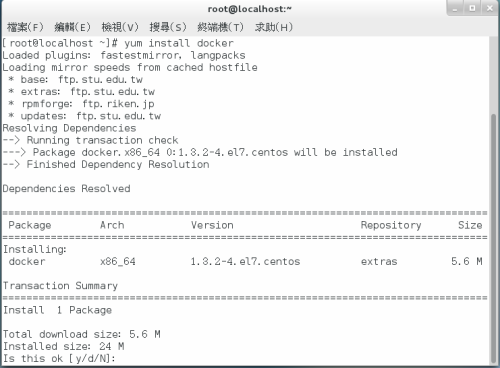
▲圖49 安裝docker套件
完成docker套件的安裝之後，請下達systemctl start docker命令來啟動它即可。至於如果希望每一次CentOS系統啟動時自動執行，請如圖50所示下達systemctl enable docker命令。
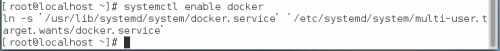
▲圖50 啟用docker服務
對於目前執行中的docker完整版本資訊檢視，請如圖51所示下達docker version即可，其內容包括了用戶端版本、用戶端API版本、伺服端版本、伺服端API版本等資訊
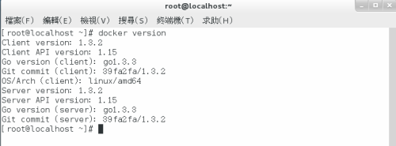
▲圖51 查看docker版本資訊
確認docker服務正在執行之中，便可以開始來下載與安裝所需要的容器映像檔，以取得最新版本的CentOS映象檔來說，只要下達sudo docker pull centos即可，如果是Ubuntu Linux的映象檔，請如圖52所示下達sudo docker pull ubuntu命令。如果Fedoa Linux映象檔，則可以下達sudo docker pull fedora。
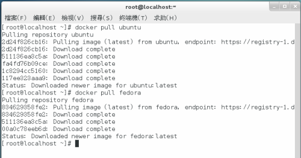
▲圖52 安裝映像檔
關於映象檔的下載安裝，您可以先行線上的搜尋結果後，再來決定所要安裝的映象檔名稱。以Ubuntu Linux系列的映象檔來說，您就可以下達docker search ubuntu，便可以像如圖53所示一樣，找到所有以Ubuntu系列為主的Linux映象檔。其中凡是有標示為Official與Trusted字眼的映象檔，皆是您最佳的選擇。
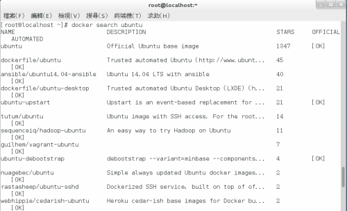
▲圖53 搜尋Ubuntu系列映像檔
如果您想要知道目前已下載安裝的映象檔有哪一些，只要下達docker images命令即可，範例中便可以看到目前有關Ubuntu的映象檔共有五個，而Fedora則有兩個。進一步您可以下達docker info命令，來得知目前Docker中容器的數量、映象檔數量、集區的區塊配置大小、資料檔位置、中繼資料檔位置、資料已使用的空間大小、資料可用的總空間大小、中繼資料已使用的空間大小、中繼資料可用的總空間大小、程式庫版本資訊、Linux核心的版本資訊以及目前的CentOS版本資訊等等。
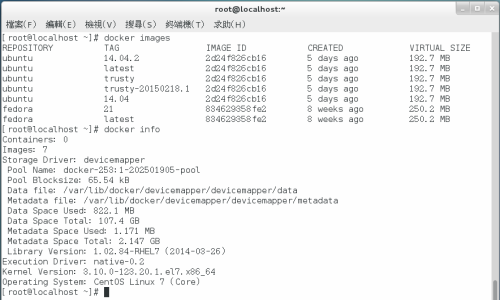
▲圖54 查看目前映像檔資訊
接下來您可以嘗試在某一指定的容器中執行命令，例如您可以下達docker run Ubuntu:latest ls –l命令，便可以像如圖55所示一樣，檢視到目前Ubuntu容器中的目錄清單。另一個例子是執行docker run centos:latest cat /etc/centos-release，便可以察看到目前這個CentOS容器的系統版本資訊。
▲圖55 執行docker命令
當您想要知道在目前的Docker服務之中執行過了哪一些命令，只要像如圖56所示一樣下達docker ps –a命令，即可查詢到曾經在哪一個容器之中執行過什麼命令參數。
▲圖56 查看docker執行過的命令
我們除了能夠將Docker指定的命令參數，執行在某一個容器的終端機命令列之中，也可以選擇先進入到該容器之後，再對於該容器中的Linux系統進行管理。如圖57所示筆者以docker run -i –t ubuntu:latest /bin/bash來進入到此容器的終端機提示列下，然後下達lsb_release –a命令參數來查看目前所在容器的系統版本資訊。另外在此還可以看到每一個container都有一個唯一的ID，來顯示在root@字元提示之後。若是想要離開目前的容器，只要下達exit命令或是按下Ctrl+D按鍵即可。
▲圖57 進入容器終端機
既然我們可以使用Docker的命令來進入到任一個容器的作業系統之中，那麼肯定也可以執行許多該系統所提供的命令工具，或是在該系統之中安裝各類軟體套件。如此一來不就可以讓不同的伺服器服務分散運作在不同的容器之中。如圖58所示便是筆者下達一個最常用的ifconfig命令，來查看目前這個容器系統的預設IP位址配置。
▲圖58 查看容器網路配置
接下來就讓我們來嘗試在這個Ubuntu Linux的容器之中，下載安裝一個Apache2的網站服務套件吧。請如圖59所示下達apt-get install apache2即可。
▲圖59 在容器中安裝Apache2套件
成功完成Apache2套件的安裝之後，便可以先下達service apache2 status來查看此網站服務的執行狀態，如果尚未啟動就請下達service apache2 start來執行它即可。
▲圖60 啟動容器的網站服務
成功安裝與啟動Ubuntu Linux的Apache網站服務之後，我們便可以回到CentOS主機的桌面中，開啟瀏覽器來嘗試連線此容器的網站服務。如圖61所示便是Apache2 Ubuntu網站服務預設的首頁。
▲圖61 連線容器的Apache網站
關於CentOS 7.0於虛擬化平台的部署，您除了可以選擇將它安裝在以KVM、VirtualBox、Xen、XenServer以及VMware為主的相關虛擬機器之外，同樣也可以將它安裝在Windows Server 2012 R2、Windows 8.1企業版(專業版)或是免費的Hyper-v 2012 R2的Hyper-v虛擬機器之中。如圖所示便是一個CentOS 7.0虛擬機器，正運行於Hyper-v 3.0 R2平台的範例，由於它已支援Hyper-v的動態記憶體配置技術，因此可讓整體資源的使用率最大化。
▲圖62 將CentOS部署在Hyper-v
結 論
CentOS一直以來皆是以穩定且高效能的表現揚名於IT世界，因此當您公司的資訊化環境當中，打算建立一套跨平台的營運系統之時，如果期望它既能夠在一個最可靠的系統上持續運行，且又能夠節省諸多的導入成本，那麼選擇CentOS來搭配優質的硬體建設，肯定可以展現出絕佳的IT效益。進一步您甚至於可以善用CentOS 7.0的Docker虛擬化技術，來部署出更多不同用途的CentOS應用系統，讓系統整合的緊密度與一致性發揮到淋漓盡致，為企業打造出最具商業價值的私有雲端。
Special


Address：No.128, Sec.2, Academia Rd., Institute of Information Science, Academia Sinica, Nangang District, Taipei City 11529, Taiwan (R.O.C).
Privacy Policy. Terms-of-use